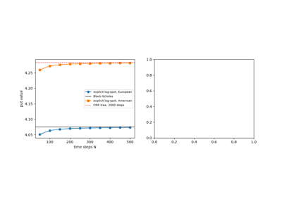

Breakthroughs in PDE Methods#
“The purpose of computing is insight, not numbers.” – Richard Hamming
An option price is the solution of a parabolic partial differential
equation, so every tool built for heat flow, groundwater and oil
reservoirs applies to it. The schemes behind
financialkit.pde_methods were invented by physicists and
engineers between 1911 and 1955; finance adopted them in the 1970s, when
Schwartz and Brennan priced warrants and American puts on a grid, and
adapted them in the decades since to kinks in payoffs, knock-out
barriers and early exercise. This chronology follows that path from
stability and accuracy theory to the solvers in the code.
1911 – Richardson Extrapolation#
Lewis Fry Richardson computed the stresses in a masonry dam by finite differences, by hand, and needed more accuracy than his coarse grids could give. He observed that when the error of a scheme behaves like a power of the step size, solutions on two grids determine both the unknown constant and the limit, a “deferred approach to the limit” that he and Gaunt developed further in 1927. Applied to option prices it turns two second-order solves into a fourth-order estimate, provided the error really is a clean power of the step, which a payoff kink can spoil.
Implementation: financialkit.pde_methods.systems.accuracy.richardson_extrapolation()
extrapolates a sequence of refined approximations and estimates the
observed order from three of them, returning a
RichardsonResult. The example
extrapolates Crank-Nicolson call prices and gains two digits.
References: L. F. Richardson, “The Approximate Arithmetical Solution by Finite Differences of Physical Problems Involving Differential Equations, with an Application to the Stresses in a Masonry Dam,” Philosophical Transactions of the Royal Society A 210 (1911) 307-357; L. F. Richardson and J. A. Gaunt, “The Deferred Approach to the Limit,” Philosophical Transactions of the Royal Society A 226 (1927) 299-361.
1928 – Courant-Friedrichs-Lewy#
Richard Courant, Kurt Friedrichs and Hans Lewy studied difference approximations to the classical equations of mathematical physics and proved that an explicit scheme cannot converge if its time step lets the true solution’s domain of dependence escape the grid’s. For diffusion the condition is severe: the time step must shrink with the square of the space step. For the Black-Scholes equation on a uniform spot grid this means that refining from 100 to 200 spot intervals quadruples the number of explicit time steps.
Implementation: financialkit.pde_methods.systems.stability.explicit_stability()
computes the largest stable explicit step from the eigenvalues of the
discrete Black-Scholes operator, and
diffusion_number()
gives the log-spot version. The example prices a call just below the
limit and watches the same scheme blow up just above it.
References: R. Courant, K. Friedrichs and H. Lewy, “Über die partiellen Differenzengleichungen der mathematischen Physik,” Mathematische Annalen 100 (1928) 32-74; English translation in IBM Journal of Research and Development 11 (1967) 215-234.
1947 – Crank-Nicolson#
John Crank and Phyllis Nicolson, computing the heating of cellulose, centred their difference scheme on the half time step by averaging the explicit and implicit space differences. The result is second-order accurate in time and stable for any step, which made it the standard method for diffusion problems and, three decades later, for option pricing. Its one weakness is that the stiffest modes are barely damped, which matters when the initial data has a kink.
Implementation: financialkit.pde_methods.systems.schemes.CrankNicolson
is the theta-scheme with \(\theta = 1/2\), stepping with
theta_march() and returning
an FDResult with the price,
delta, gamma and value surface. The example shows its second-order
convergence to Black-Scholes.
References: J. Crank and P. Nicolson, “A Practical Method for Numerical Evaluation of Solutions of Partial Differential Equations of the Heat-Conduction Type,” Proceedings of the Cambridge Philosophical Society 43 (1947) 50-67.
1949 – Laasonen’s Implicit Scheme#
Pentti Laasonen, in Helsinki, analysed the scheme that evaluates the space derivatives at the new time level, so that each step solves a linear system. He showed that it is stable whatever the time step, and it is also monotone: it never creates new oscillations, at the cost of first-order accuracy in time. It is the scheme of choice for the first steps after a non-smooth payoff and for problems where robustness matters more than accuracy.
Implementation: financialkit.pde_methods.systems.schemes.ImplicitScheme
is the theta-scheme with \(\theta = 1\). The example takes time steps
hundreds of times the explicit limit and shows the error halving with
the step.
References: P. Laasonen, “Über eine Methode zur Lösung der Wärmeleitungsgleichung,” Acta Mathematica 81 (1949) 309-317.
1949 – The Thomas Algorithm#
Llewellyn Thomas, at IBM’s Watson Laboratory at Columbia, wrote down the form of Gaussian elimination that solves a tridiagonal system in a number of operations proportional to its size: one forward sweep eliminates the sub-diagonal, one backward sweep substitutes. Every implicit step of a one-factor scheme, and every half step of an ADI scheme, is such a system, and diagonal dominance means no pivoting is needed.
Implementation: financialkit.pde_methods.systems.tridiagonal.thomas_solve()
runs the algorithm in an optional Numba kernel; the schemes use
scipy.linalg.solve_banded() by default and accept
solver="thomas". The example checks the two against each other and
times Thomas against a dense solve.
References: L. H. Thomas, “Elliptic Problems in Linear Difference Equations over a Network,” Watson Scientific Computing Laboratory report, Columbia University (1949); G. H. Golub and C. F. Van Loan, Matrix Computations, 4th ed. (Johns Hopkins, 2013), Section 4.3.
1950 – Von Neumann Stability Analysis#
John von Neumann’s Fourier method, used at Los Alamos during the war and published with Charney and Fjørtoft in their numerical weather forecast, tests a linear constant-coefficient scheme one Fourier mode at a time. Each mode is multiplied by an amplification factor per step, and the scheme is stable when no factor exceeds one in modulus. The analysis explains at a glance why the explicit scheme fails above a diffusion number of one, why Crank-Nicolson never grows but barely damps the highest modes, and why the implicit scheme damps them all.
Implementation: financialkit.pde_methods.systems.stability.von_neumann_amplification()
evaluates the amplification factor of the log-spot theta-scheme over the
phase angles and returns a
VonNeumannResult. The example
compares the explicit, Crank-Nicolson and implicit factors.
References: J. G. Charney, R. Fjørtoft and J. von Neumann, “Numerical Integration of the Barotropic Vorticity Equation,” Tellus 2 (1950) 237-254; R. D. Richtmyer and K. W. Morton, Difference Methods for Initial-Value Problems, 2nd ed. (Wiley, 1967), Ch. 4.
1955 – Peaceman-Rachford ADI#
Donald Peaceman and Henry Rachford, at Humble Oil, needed to solve two-dimensional heat-flow problems for reservoir simulation on the computers of the day, where a fully implicit step was far too expensive. They alternated the implicit direction: half a step implicit in \(x\), half a step implicit in \(y\), each a set of independent tridiagonal solves. The scheme is unconditionally stable and second order, and its descendants (Douglas, Craig-Sneyd, Hundsdorfer-Verwer) price two-asset and stochastic-volatility options today.
Implementation: financialkit.pde_methods.systems.adi.PeacemanRachfordADI
prices a two-asset European payoff in log-spot coordinates, taking the
correlation term explicitly, and returns an
ADIResult. The example
prices Margrabe’s exchange option across correlations.
References: D. W. Peaceman and H. H. Rachford, “The Numerical Solution of Parabolic and Elliptic Differential Equations,” Journal of the Society for Industrial and Applied Mathematics 3 (1955) 28-41; K. J. in ‘t Hout and S. Foulon, “ADI Finite Difference Schemes for Option Pricing in the Heston Model with Correlation,” International Journal of Numerical Analysis and Modeling 7 (2010) 303-320.
1971 – Cryer’s Projected SOR#
Colin Cryer studied the quadratic programs that arise from free-boundary problems and showed that successive over-relaxation, with each update projected back onto the constraint, converges to their solution. For an American option the constraint is that the value never falls below the payoff, and projected SOR became the textbook way to price early exercise on a grid. It is simple and general, but the number of sweeps grows as the grid is refined.
Implementation: financialkit.pde_methods.systems.american.psor()
runs the projected sweeps in an optional Numba kernel and returns an
LCPSolution; it is the
default american_method of the theta-schemes. The example prices
Hull’s American put, plots the exercise boundary and counts sweeps
against the relaxation parameter.
References: C. W. Cryer, “The Solution of a Quadratic Programming Problem Using Systematic Overrelaxation,” SIAM Journal on Control 9 (1971) 385-392; P. Wilmott, J. Dewynne and S. Howison, Option Pricing: Mathematical Models and Computation (Oxford Financial Press, 1993), Ch. 9.
1973 – Black-Scholes as the Heat Equation#
Black and Scholes found their formula by changing variables until the pricing equation became the heat equation, whose solution by convolution with the Gaussian kernel was a century old. The same transformation is useful numerically: in \(x = \ln(S/K)\) and scaled time the equation has constant coefficients on a uniform grid, so the stability and accuracy theory of the heat equation applies verbatim.
Implementation: financialkit.pde_methods.systems.heat.heat_equation_price()
solves the heat equation for the transformed payoff by Crank-Nicolson and
transforms back, returning a
HeatEquationResult, and
heat_equation_exponents()
gives \(\alpha\) and \(\beta\). The example shows the payoff
diffusing and the recovered prices.
References: F. Black and M. Scholes, “The Pricing of Options and Corporate Liabilities,” Journal of Political Economy 81 (1973) 637-654; P. Wilmott, S. Howison and J. Dewynne, The Mathematics of Financial Derivatives (Cambridge University Press, 1995), Ch. 5.
1977 – Schwartz: Explicit Finite Differences#
Eduardo Schwartz valued warrants, whose dilution and dividends put them beyond the Black-Scholes formula, by discretising the pricing equation and stepping back from expiry. It was the first finite-difference valuation in finance. The explicit scheme needs no linear algebra, and its stability restriction was the price to pay for that simplicity.
Implementation: financialkit.pde_methods.systems.schemes.ExplicitScheme
is the theta-scheme with \(\theta = 0\); its result carries the
stability check in FDResult.stability. The example reproduces
Hull’s Example 15.6 across the whole grid.
References: E. S. Schwartz, “The Valuation of Warrants: Implementing a New Approach,” Journal of Financial Economics 4 (1977) 79-93; Hull, Options, Futures, and Other Derivatives, 10th ed., Ch. 21.
1977 – Brennan-Schwartz American Put#
Michael Brennan and Eduardo Schwartz priced the American put with an implicit scheme and noticed that, because a put is exercised on a single interval at the bottom of the grid, the complementarity problem at each step can be solved exactly in one pass: eliminate the tridiagonal system from the top of the grid down, then substitute back up from zero, replacing each value by the payoff whenever the payoff is larger. The algorithm is as cheap as one European step.
Implementation: financialkit.pde_methods.systems.american.brennan_schwartz()
runs the direct solve in an optional Numba kernel for exercise at either
end of the grid, and the theta-schemes use it with
american_method="brennan_schwartz". The example compares it with PSOR
and plots the put and its exercise boundary for several maturities.
References: M. J. Brennan and E. S. Schwartz, “The Valuation of American Put Options,” Journal of Finance 32 (1977) 449-462; P. Jaillet, D. Lamberton and B. Lapeyre, “Variational Inequalities and the Pricing of American Options,” Acta Applicandae Mathematicae 21 (1990) 263-289.
1978 – Brennan-Schwartz: Explicit Schemes Are Trinomial Trees#
A year after their American put, Brennan and Schwartz showed that the explicit scheme in log-price is a jump process: its three weights sum to one and match the mean and variance of the log-price increment, so the scheme is a trinomial lattice, and its stability condition is the requirement that the weights be probabilities. The observation joined the PDE and lattice traditions; Hull’s trinomial tree is the explicit scheme with \(\Delta x = \sigma\sqrt{3\Delta t}\).
Implementation: financialkit.pde_methods.systems.log_explicit.explicit_trinomial_probabilities()
returns the weights as
TrinomialProbabilities, and
log_explicit_price()
runs the scheme on a grid wide enough that the spot never feels the
boundaries. The example prices European and American puts and shows the
middle weight turning negative at the stability limit.
References: M. J. Brennan and E. S. Schwartz, “Finite Difference Methods and Jump Processes Arising in the Pricing of Contingent Claims: A Synthesis,” Journal of Financial and Quantitative Analysis 13 (1978) 461-474; Hull, Options, Futures, and Other Derivatives, 10th ed., Ch. 21.

Brennan-Schwartz: explicit schemes are trinomial trees
1984 – Rannacher Smoothing#
Rolf Rannacher, analysing finite-element solutions of the heat equation with irregular initial data, showed that Crank-Nicolson loses its second order and leaves spurious oscillations when the data is rough, and that a few fully implicit steps at the start restore both. Giles and Carter later quantified the effect for the Greeks of vanilla and digital options, where the payoff kink or jump excites exactly the modes that Crank-Nicolson fails to damp.
Implementation: the rannacher_steps option of
financialkit.pde_methods.systems.schemes.CrankNicolson (handled
in theta_march()) replaces
each of the first steps by two implicit half steps. The example plots
gamma with and without the smoothing.
References: R. Rannacher, “Finite Element Solution of Diffusion Problems with Irregular Data,” Numerische Mathematik 43 (1984) 309-327; M. B. Giles and R. Carter, “Convergence Analysis of Crank-Nicolson and Rannacher Time-Marching,” Journal of Computational Finance 9 (2006) 89-112.
2000 – Tavella-Randall Non-Uniform Grids#
Domingo Tavella and Curt Randall’s book on finite-difference pricing made the case for non-uniform grids generated by a smooth coordinate map. A hyperbolic sine concentrates nodes around the strike, where the payoff kink makes the solution curve, and spaces them out where the value is nearly linear; because the map is smooth, three-point differences keep their second order. The same accuracy then needs far fewer nodes.
Implementation: financialkit.pde_methods.systems.grids.tavella_randall_grid()
builds the grid, black_scholes_operator()
discretises on any grid, and grid="tavella_randall" selects it in the
theta-schemes. The example compares errors on uniform and sinh grids of
the same size.
References: D. Tavella and C. Randall, Pricing Financial Instruments: The Finite Difference Method (Wiley, 2000), Ch. 5.
2000 – Zvan-Forsyth-Vetzal Barrier Options#
Robert Zvan, Peter Forsyth and Kenneth Vetzal showed that finite differences price barrier options well only with care: a grid node must sit on the barrier, so that the knock-out condition is imposed exactly, and the time stepping must cope with the discontinuity between the payoff and the boundary. A barrier that falls between nodes costs first order accuracy, and Crank-Nicolson without smoothing produces oscillating Greeks near it.
Implementation: financialkit.pde_methods.systems.schemes.ThetaScheme.price_barrier()
starts (or ends) the grid at the barrier for down-and-out and up-and-out
options. The example checks a down-and-out call against the method of
images and compares an aligned grid with a barrier half a node away.
References: R. Zvan, P. A. Forsyth and K. R. Vetzal, “PDE Methods for Pricing Barrier Options,” Journal of Economic Dynamics and Control 24 (2000) 1563-1590; Hull, Options, Futures, and Other Derivatives, 10th ed., Section 26.9.
2002 – Forsyth-Vetzal Penalty Method#
Peter Forsyth and Kenneth Vetzal replaced the American constraint by a penalty term that pushes the value up to the payoff wherever it falls below, and solved the resulting nonlinear equations by a Newton (policy) iteration. They proved that the iteration converges monotonically in a finite number of steps, typically two or three per time step regardless of the grid size, and that the penalised solution approaches the true one as the penalty grows. Unlike Brennan-Schwartz it needs no assumption about the shape of the exercise region.
Implementation: financialkit.pde_methods.systems.american.penalty_solve()
iterates tridiagonal solves until the penalised set stops changing, and
the theta-schemes use it with american_method="penalty". The example
counts iterations per time step against PSOR as the grid is refined.
References: P. A. Forsyth and K. R. Vetzal, “Quadratic Convergence for Valuing American Options Using a Penalty Method,” SIAM Journal on Scientific Computing 23 (2002) 2095-2122.